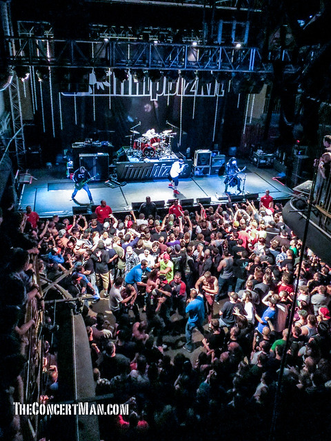
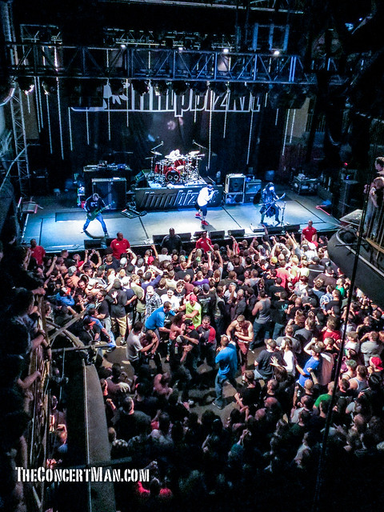
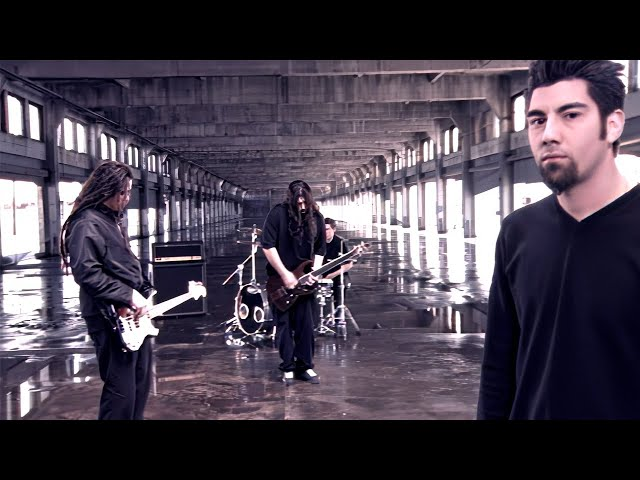
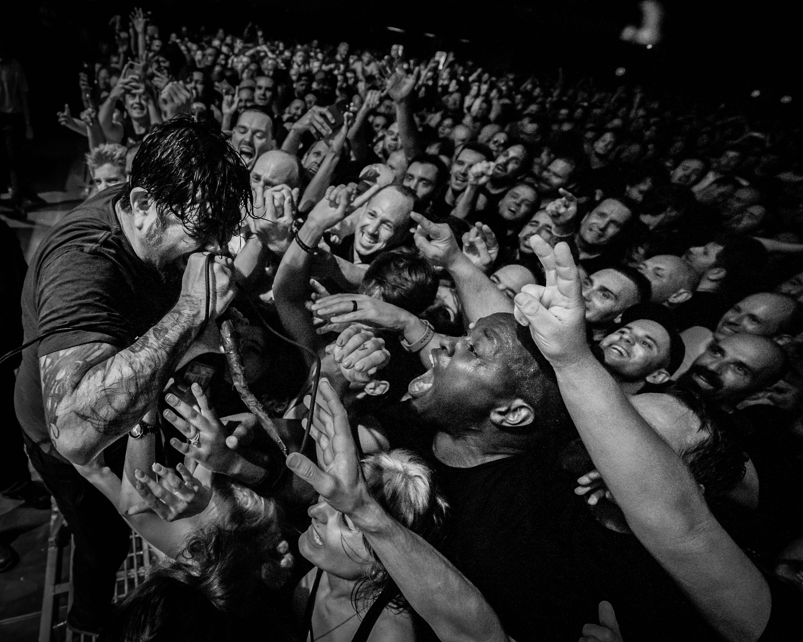
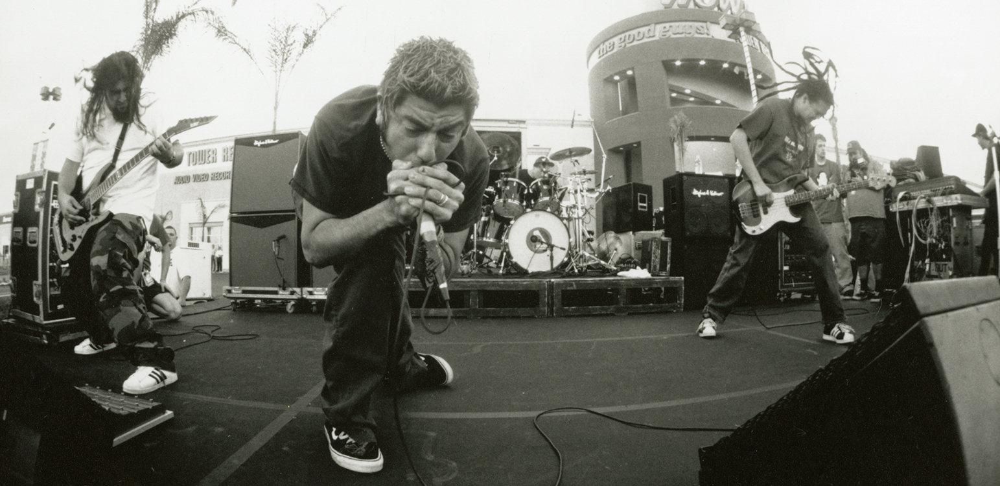
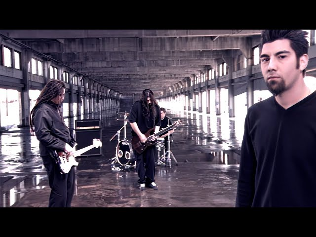
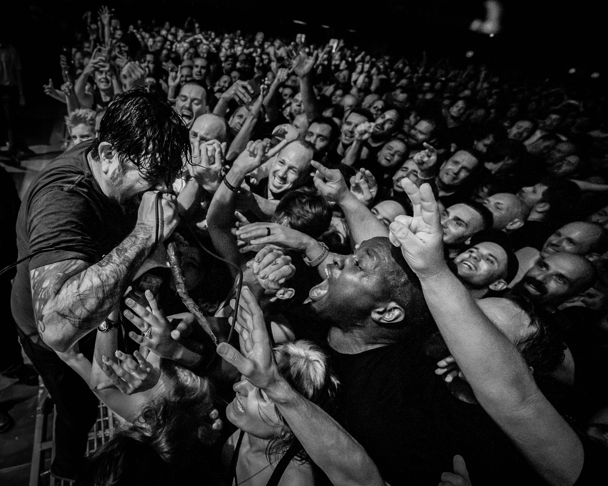
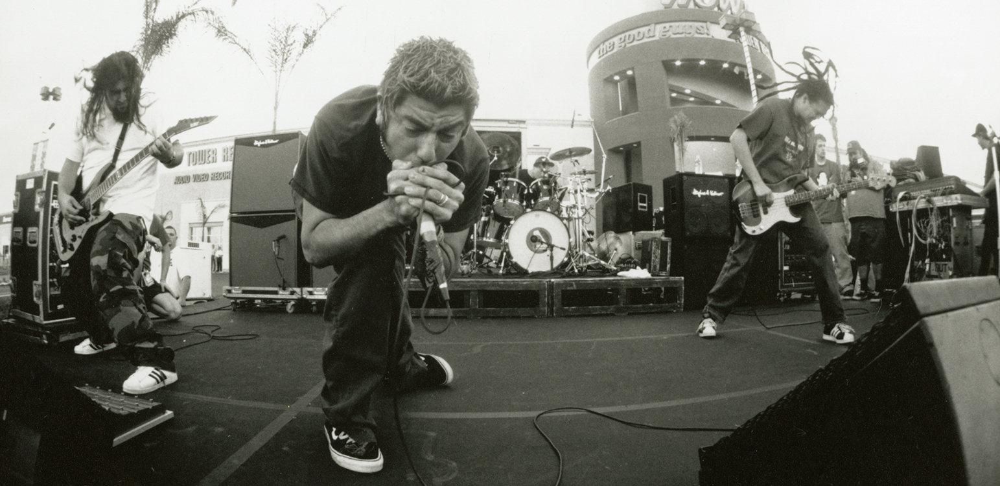

What is nu-metal?
Nu-metal is a subgenre of alternative metal that combines elements of heavy metal with other genres like hip-hop, alternative rock, funk, industrial, and grunge. The genre achieved great commercial success in the late 90s and early 2000s.​
Characteristics
Nu-metal is typically characterized by down-tuned guitars, sometimes seven-string guitars, few or no guitar solos, and influences from other musical genres, usually rap and industrial, so any band with a DJ falls into this genre. This is how bands like Slipknot and Limp Bizkit are in the same subgenre. There is also the distinctive "pogo" riff commonly found in nu-metal. Watch any old concert, and you will see people jumping up and down during certain sections; that's the pogo riff.
Chronology and Impact
Nu-metal developed from the 90s alternative metal scene, which included bands like Faith No More, Rage Against the Machine, and Tool. These bands combined elements from various genres and created a new, fresh sound that inspired a new generation of musicians.
In 1994, the band Korn released their self-titled debut album, which is considered one of the first nu-metal albums. The album featured a mix of hip-hop rhythms and heavy metal, along with the unique and distinctive voice of vocalist Jonathan Davis. The album was a commercial success and laid the foundations for the nu-metal genre.
From then on, other bands began to adopt the nu-metal sound, including Limp Bizkit, Deftones, Incubus, Slipknot, and System of a Down. Each band added its own twist to the genre, but they all shared a focus on aggression, emotion, and musical experimentation.
By the late 90s, nu-metal became one of the most popular genres in music, and many of the bands of the time achieved great commercial and critical success. However, the popularity of the genre waned as the 2000s began, and many bands started experimenting with different styles and sounds.


 


 




